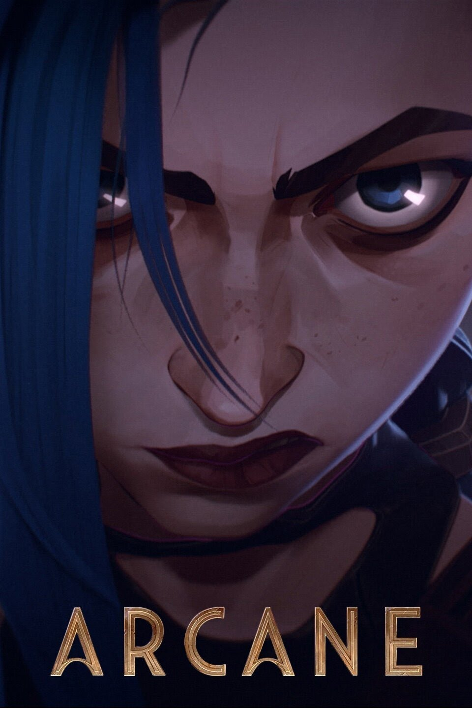

SÉRIES
Vikings
Vikings
Vikings segue a vida de Ragnar Lothbrok (Travis Fimmel), o maior guerreiro da sua era. Lider de seu bando, com seus irmãos e sua família, ele ascende ao poder e torna-se Rei da tribo dos vikings. Além de guerreiro implacável, Ragnar segue as tradições nórdicas e é devoto dos deuses. As lendas contam que ele descende diretamente de Odin, o deus da guerra.
8.5/10
88%
Peaky Blinders
Peaky Blinders
Uma notória gangue da Inglaterra de 1919 ascende no submundo liderada pelo cruel Tommy Shelby, um criminoso disposto a subir na vida a qualquer preço.
8.8/10
93%
Mr. Robot
Mr. Robot
Elliot, um brilhante mas altamente instável jovem engenheiro de segurança cibernética e hacker vigilante, torna-se uma figura chave em um jogo complexo de domínio global quando ele e seus aliados sombrios tentam derrubar a corporação corrupta para a qual ele trabalha.
8,5/10
94%
Arcane

Arcane
Duas irmãs. Duas cidades. Uma descoberta que mudará o mundo para sempre. Nas cidades de Piltover e Zaun, a tensão aumenta à medida que inventores, arruaceiros, políticos e senhores do crime ficam cada vez mais fartos das restrições de uma sociedade devastada.
9/10
96%
Game of Thrones
Game of Thrones
Conta a históra de um lugar onde uma força destruiu o equilíbrio das estações, há muito tempo. Em uma terra onde os verões podem durar vários anos e o inverno toda uma vida, as reivindicações e as forças sobrenaturais correm as portas do Reino dos Sete Reinos. A irmandade da Patrulha da Noite busca proteger o reino de cada criatura que pode vir de lá da Muralha, mas já não tem os recursos necessários para garantir a segurança de todos. Depois de um verão de dez anos, um inverno rigoroso promete chegar com um futuro mais sombrio. Enquanto isso, conspirações e rivalidades correm no jogo político pela disputa do Trono de Ferro, o símbolo do poder absoluto.
9.2/10
82%
Inicio